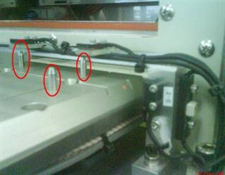
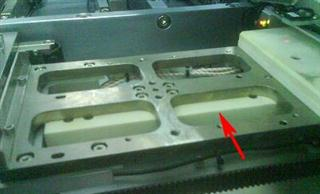
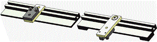

Service History
Subject: Old NS-7000 Output Shuttle guide pins
Handler Model: NS-7000 (S/N: 18732)
Controller: RC520
Date: 30 Dec 2008
Symptom
Currently the NS-7000 s/n:18732 in Silabs is unable to run with guide pins attached to the output shuttle jig due to the shuttle height.
We observed that this old NS-7000 model's shuttle design is different from the existing model. See photos below
|
 Output shuttle guide pins unable to go through Sensor Rail. |
 Slider Heat Block seems to be higher than existing NS-7000 model |
1. Is it possible to make this handler possible for their existing change-kits without any modification to be done on change-kit(i.e change to shorter guide pins)
Impossible.
2. If change to shorter guide pins, will there be sufficient guidance for contactors during index arm placement onto output shuttle.
My understanding for SILAB package is as follows.
QFP7x7x1.0/7x7x1.4/10x10/14x14mm
I will check with KA/EPSON for the advice if we can make guide pin shorter than current one.
There is not much effect even you remove guide pin on the output shuttle with this package size. Please remove the guide pins on output shuttle jig.
3. If option 1 and 2 cannot be done, is there any alternative?
Comment from KA for this issue.
If we make guide pin on output shuttle to be short so that it does not interfere with chamber, it becomes too short to be guide pin.
Therefore, we would like you to remove the guide pin on the output shuttle as it does not much effect even we remove it.
Basically, it is important to install guide pin on the Input shuttle as the contact position on the socket requests so accurate.
However, guide pin on the output shuttle is not important as they don’t need accurate position as same as Input one.
Moreover, as SILAB package is not so small, we don’t need hard stopper guide pin on the output shuttle, too.
Please remover guide pin and if you have any problem, please let us know.
Action
KA to re-design sensor bridge to cater for Output Shuttle with guide pins.

1 Apr 2009 email, new design top sensor bracket(Right side picture) for Output Shuttle.
New design top sensor bracket install on 15 Apr 2009, 0152-NS7K.
Cause